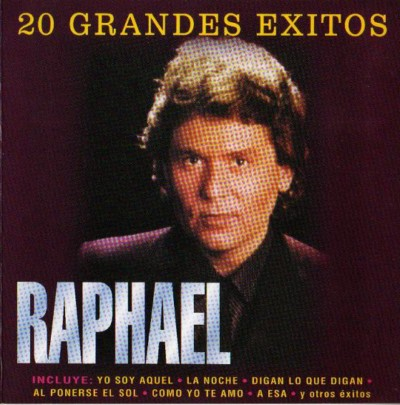
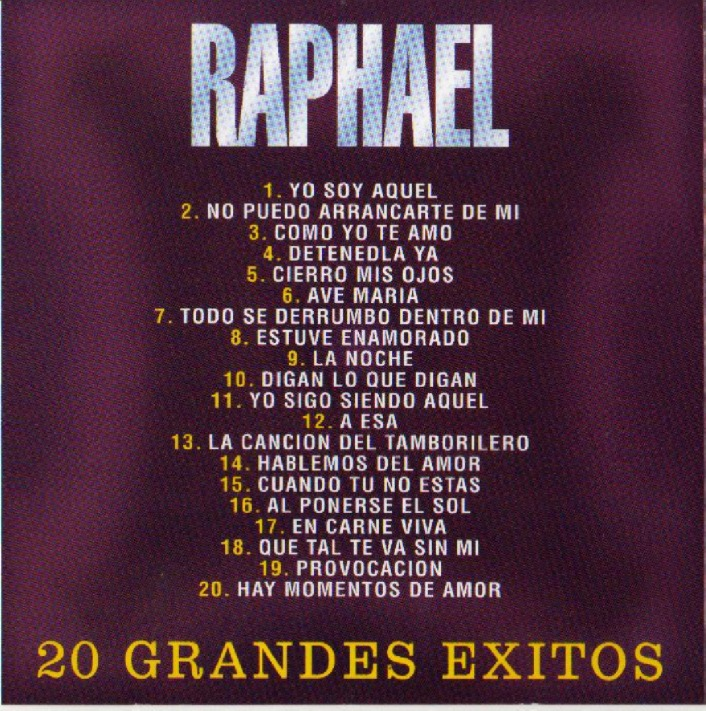

Inicio
Reproductor de audio web
Sobre mí
(C) Alfonso Rubio Rioseras - Todos los derechos reservados.
Para ver mis videos hechos con I.A visite mi canal de YouTube
Alfonso Rubio Rioseras
Contacto
Puedes contactarme a través de mi correo electrónico: arioseras@hotmail.com
Biografía del cantante
Para más información sobre el cantante, pulsa el siguiente enlace a Wikipedia:
🎵 Disfruta del disco
Carátulas del disco:
------
Selector de canciones
Yo soy Aquel
0:00 / 0:00
No puedo arrarcarte de mi
0:00 / 0:00
Comoyo te amo
0:00 / 0:00
Detenla ya
0:00 / 0:00
Cierra mis ojos
0:00 / 0:00
Ave Maria
0:00 / 0:00
Todo se derumbo dentro de mi
0:00 / 0:00
Estuve enamorado
0:00 / 0:00
La noche
0:00 / 0:00
Digan lo que digan
0:00 / 0:00
Yo sigo siendo aquel
0:00 / 0:00
Yo sigo siendo aquel
0:00 / 0:00
La Cancion Del Tamborilero
0:00 / 0:00
Hablemos del amor
0:00 / 0:00
Cuando tu no estes
0:00 / 0:00
Al Ponerse El Sol
0:00 / 0:00
En carne viva
0:00 / 0:00
Que tal te va sin mi
0:00 / 0:00
Provocacion
0:00 / 0:00
Hay Momentos De Amor
0:00 / 0:00